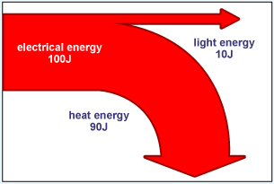
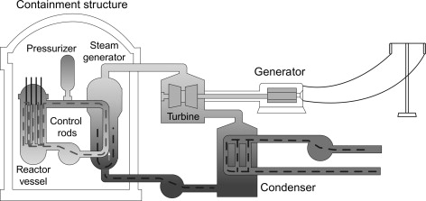
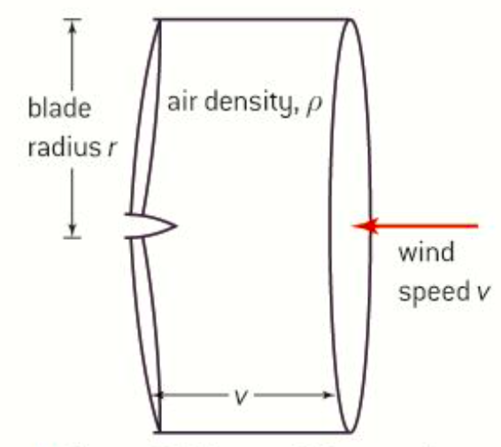
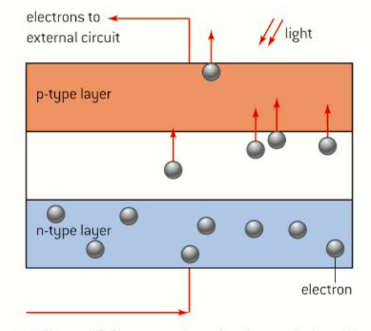
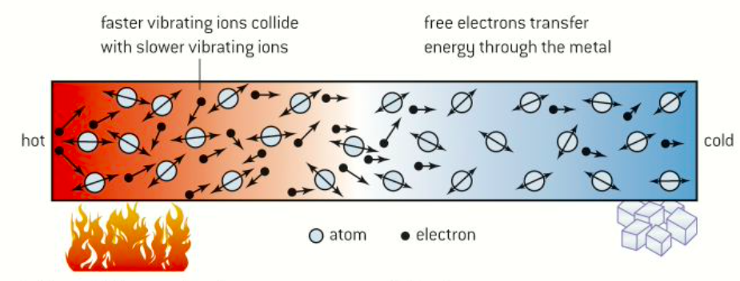
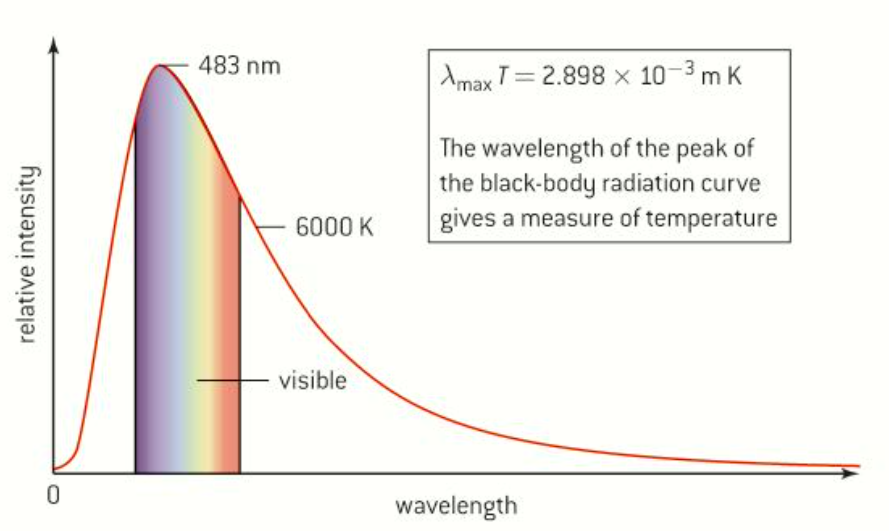

Primary energy source
:can be used directly as they appear in the natural environmnet.
Non-renewable energy source
:can be replaced, but only over very long, slowly by natural processes.
Ex) Nuclear fuels source: uranium-235, nuclear energy
Fossil fuels source: crude oil, coal, natural gas, chemical potential Energy
Renewable energy source
:can be replenished in relatively short times.
Ex) Sun -> solar energy
Water -> kinetic energy to Potential energy
Wind -> kinetic energy
Biomass -> chemical potential energy
Geothermal -> internal energy
Energy: ability to work Degraded energy: has been transfereed to the surroundings and will never again be able to do work Fuel's specific energy: the amount of useful energy stored per unit mass, Unit: MJkg-1
[Energy available in energy source sample(in J)/mass of energy source sample(in kg)] Energy density: the amount of useful energy stored per unit volume, Unit: MJm-3
[Energy available in energy source sample(in J)/volume of energy source sample(in m3)]
Fuel
Specific energy MJkg-1
Energy density MJm-3
Wood
16
1x104
Coal
20~60
(20~60)x106
Petrol(gasoline)
45
35x106
Natural gas
55
3.5x104
Uranium-235
8x107
1.5x1015
Deutrium/Tritium
3x108
6x1015
Water
0.001
103
Secondary energy source
: the result of transformation from a primary source
Ex) Electricity, Hydrogen
Sankey diagrams
: visual representation of the flow of energy in a device or in a processes

each energy and loss is represented by an arrow
the width of an arrow is proportional to the amount of energy
energy flows from left to right
degraded energy(energy loss) moves to the top or bottom
= power transfer
Thermal power station
: a primary source of energy including fossil fuels, nuclear fuel, biomass, other fuels being able to produce. Internal energy is converted to internal energy and then to electrical energy.
-> the energy is used to heat water producing steam at high temperatures and high pressures.
Energy from the primary fuel heats water in a pressure vessel to create steam(high-pressure steam)
Primary energy -> Internal energy of water
High-pressure steam blows the turbines
Kinetic energy of turbines
Turbines are connected to ac generator, electrical energy is produced when coils of wire, turned by turbines
Electrical energy in generator
Fossil and biomass station has a combustion process(Fuels and Biomass are burnt)
Nuclear power station
- nuclear fission: the energy released is equivalent to the difference between the energy needed to deconstruct a large nucleus and that emitted when two smaller nuclei are constructed from its components.
-> it becomes two smaller nuclei that have greater binding energy than a large nucleus.
Pressurized water reactor(PWR)
: the energy released in the nuclear fission is used to create high-pressure steam to turn turbines connected to an electrical generator.

Uranium is mined as an ore made up of 99% Uranium-238 which is not required in fission process
-> An initial extraction process is required to boost the ratio of Uranium-235 to 3%(Enrichment).
Enrichement = Uranium-235를 광석에 많게 하는 과정
Uranium 238 is good absorber so prevents fission reaction becoming self-sustaining of neutrons -> lower reaction rate
The enrichd material is formed into fuel rods - cylinder of uranium inserted into the core of reactor
-> most energy released = kinetic energy of the fission fragments and neutrons emitted during the fission
Enriched 된 걸로 fuel rods를 만들고 fission에서 나온 neutron과 파편의 kinetic energy가 대부분의 에너지다.
Emitted neutrons are moving at very high speeds but must be lower than 2kms-1 to sustain fission reaction -> at room temperature, neutrons with lower than 2kms-1 = thermal neutrons
방출된 neutron의 속도가 너무 빨라서 fission을 할 수 있는 속도 2kms-1 보다 작아야한다.
Moderator slows down the speeds of neutrons -> not being a god absorber of neutron(-> deutrium oxide=Heavy water)
neutron을 잘 흡수하지 않는 heavy water나 graphite으로 만들어진 moderator가 emitted neutron과 부딪히면서 속도를 줄여준다.
- water and graphite moderator -> fast-moving neutrons strike the moderator, lose kinetic energy and move at thermal speeds to increase probability of fission reaction.
Control rods which are made up of boron absorbing neutrons very well, that can lower fission reaction rate -> keeping energy output of the reactor through raising and lowering control rods
- 일정한 power output을 위해 neutrons을 잘 흡수하는 boron 같은 물질로 만들어진 control rods를 줄였다 늘렸다 한다.
Heat exchanger conveys the internal energy from inside the reactor to the turbines.
-> collecting energy from moderator and other hot region of reactor and delivers to the water.
-> turbine steam cannot be directly piped through the reactor vessel because there is a chance of readioactive material transferring outsdie reactor vessel -> should be closed system.
Heat exchanger는 primary source의 internal energy ->thermal energy in moderator, hot region에서 water로 옮겨서 turbine을 돌리고 electrical energy를 만든다.
Turbine과 reactor vessel은 바로 연결하지 않음, 왜? radioactive material(uranium)이 밖으로 나갈수 있기 때문.
에너지의 변화 과정이 중요
Nuclear energy, Internal energy of Uranium -> Kinetic energy of neutrons -> Thermal energy of moderator, hot region of reaction vessel -> Internal energy of steam -> Kinetic energy of turbine -> Electric energy in generator
Safety issues in nuclear power
reactor vessel is made up of thick steel to withstand high temperature and pressure.
-> absorbing α, β radiations with γ rays and stray neutrons
containment structure -> layers of very thick concrete to absorb neutrons and γ rays
emergency safety mechanism to quickly shut the reactor down
using robots when inserting and removing fuel rods due to highly radioactive exposure
reactor의 수명은 25~50년 정도, 폐기 할때 fuel rods, concrete shield 다 제거하고 일반적인 토지와 radioactivity가 비슷해질 때까지 홀로 둔다.
Wind generators
- Horizontal/Vertical-axis types

To estimate the maximum power available from horziontal-axis,
Volume of air per second = vA (v: speed of wind, A: blade area)
Mass of air moving through turbine per second = ρvA (ρ: density of air)
Kinetic energy of air arriving at turbine per second
= 1/2 x mass x (speed)2
= 1/2 x (ρvA) x v2
= 1/2 x ρv3A
= 1/2 x ρπr2v3
(A = πr2)
Assumptions
all kinetic energy of the wind can be used.
- wind has to move out of back of turbine. If turbines nearby disturb the flow of air, it leads to a reduction in energy.
-The air molecules cannot be brought completely to rest in collisions with the blades.(공기 분자가 blade와 부딪히고 속도가 0이 되지 않아서 KE가 다 transfer 되지 않음)
it suggests that the system has a high wind speed and long blade
-> but it increases the mass of blade ,then blade cannot rotate at high speeds.
many wind farms are placed off=shore wind speed higher than land
Advantages
Disadvantages
no energy costs
no chemical pollution
capital costs can be high but reduce with economies of scale(due to (speed)3)
variable on a daily or seasonal
noise/visual pollution
ecological impact(birds)
Pumped storage(water)
: the gravitational potential energy of water held at a level above a reservoir is converted to electrical energy as the water is allowed to fall to the lower level.
GPE -> KE -> Electrical energy
2 water reservoirs connected by pipes
- when demand is high, water is running through the pies from upper reservior to lower water turbines.
- When demand is low, electric energy is cheap, the turbines operate in reverse to pump water back from the lower to upper reservior.
전기가 필요하지 않을때 물을 다시 위로 올린다는 이야기
Maximum power P available from the water
P= (m/t) x gΔh = (vρ/t) x gΔh
Hydroelectric power
Heat from the Sun turns water into water vapor, forming clouds
Clouds are blown over the land and water vapor turns back into water as raining
Rain water falling on high ground has PE that can be converted into electricity
Solar energy
Solar heating pannel: a techinque for heating water using the Sun's Energy
Solar radiation(IR) enters the pannel and is absorbed by a black metal plate which gets hot and in turn makes the water hot by conduction.
Water continuously circulates as the water gets hot, it flows out and move cold water flows in.
뭔말이냐? 태양으로 부터 온 Infrared Radiation이 Solar pannel에 들어가서 속에 있는 검은 금속 플레이트를 뜨겁게 만들고 물을 따뜻하게 데운다. 뜨거운 물은 내보내고 차가운물을 또 다시 데운다. 이걸 반복한다는 거지
Solar photovoltaic cells: converts electromagnetic radiation from the Sun into electrical energy.
Photovoltaic cells consist of a single crystal of semi-conductor(most significant charge carriers electrons in n type, absence of electrons in p type).
Normally, they are in equilibrium between the charge carriers in both havles of the cell.
When energy in photons fall on the photovoltaic cells, equilibrium is disturbed, electrons are released and gain energy to move from n-region to p-region.
Electrons transfer this energy to external circuit -> do useful work

Advantages
Disadvantages
maintenance costs are low
no fuel costs
efficient land use
environmentally friendly(CO2, no acid rain)
large areas required(for photovoltaic cells)
weather dependent
(# 8.1 단원 끝)
(# 8.2 단원 시작)
8.2 Thermal energy transfer
Method of heat transfer
Conduction
: energy is transferred by direct contact
- metal is good thermal conductors due to delocalized electrons(collisions)

-until thermal equilibrium(same temperature between 2 objects), the energy supplied through electrons.
-Conduction is important in solid, can occur in gas and liquid(atoms are farther apart in fluids)
Convection
: the movement of groups of atoms or molecules within fluids, arises through variations in density.
- convection cannot take place in solids
- convection current: cold air goes down and hot air goes up.
Thermal radiation
: the transfer of energy by means of electromagnetic radiation.
- thermal radiation doesn't need a medium to move.
- Sun emits EM radiation to us.
- Emission: absorb then radiate, Reflection: not absorb
Black-body radiation Black body
- it aborbs all wavelengths of EM radiations regardless of angle of incidence.
- it is a good emitter(radiator) and absorber but poor reflector.
- The color of black body is black at -273.15K
- Its surface is important but not dependent on materials of container.
- Sun is near-perfect blackbody radiator, 6000K
To measure intensity of radiation at a particular wavelengths
I = Power/Area on power incident

As temperature increases,
- overall intensity at each wavelength increases.
- total power emitted/m2 increases -> total area under the graph increases.
- curves skew towards shorter wavelengths(higher frequency)
- peak of the curve moves to shorter wavelengths


 2 water reservoirs connected by pipes
2 water reservoirs connected by pipes